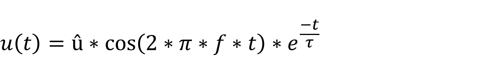

Cam and Crank - Knock Generator v3 — This Knock Generator code module is an extension to the Crank Encoder v3 code module. It generates a knock signal at the analog output of the configurable I/O module once per 720° iteration of the crankshaft.
This Knock Generator code module receives the crankshaft angle from the corresponding Crank Encoder v3 code module channel. A knock pulse is generated once per 720° iteration. The knock pulse waveform is a cosine with exponential decay.

This driver block must be used in combination with a Crank Encoder v3 block as well as an Analog Output block to enable and parameterize the corresponding Crank encoder and Analog output channels.
This driver block has two input ports:
Defines the angle between 0 and 720° at which the knock pulse occurs.
A signal level 1 at this input enables the knock pulse. The pulse is disabled with a 0 at this input.
This parameter associates a code module block with a configurable I/O module setup block. Set this value to match the Module ID defined in the setup block of the required configurable I/O module.
A vector of Knock Generator channels this driver block entity will access. Channels can be specified in the range 1 to N (N is the number of crank encoder channels in the configuration file). The order of channels can be freely mixed, but the same channel should not be used more than once. The width of this vector also defines the resulting size of some of the following parameters if scalar expansion applies. The length of the channel vector defines the dimension of the input signals.
Defines the base sample time at which this driver block gets its sample hit. This parameter can also be set to -1 for inherited sample time. The units are in seconds.
This parameter defines the amplitude [V] of the knock signal oscillation. It can be a scalar or vector. The vector length must match the number of enabled channels.
This parameter defines the frequency [Hz] of the knock signal oscillation. It can be a scalar or vector. The vector length must match the number of enabled channels.
This parameter defines the time constant [s] of the exponential decay of the knock signal. It can be a scalar or vector. The vector length must match the number of enabled channels.